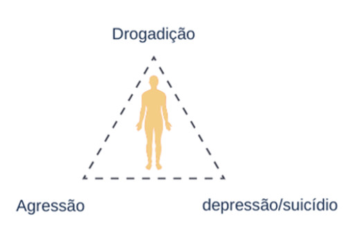

Conhecida também como a Psicoterapia do sentido da vida, ou ainda a terceira escola Vienense de Psicoterapia, sendo a primeira a Psicanálise de Sigmund Freud e a segunda a Psicologia Individual de Albert Adler, a Logoterapia é uma escola psicológica de caráter fenomenológico, existencial e humanista, sendo criada pelo psiquiatra e neurologista austríaco Viktor Emil Frankl (1905-1997).
O termo “Logos” deriva do grego logos e significa sentido, e o termo terapia, cura ou cuidado. Sendo assim, concentra-se no sentido da existência humana bem como na busca por esse sentido, sendo essa busca a motivação primária do ser humano.
A Logoterapia parte da premissa de que a vida tem um sentido e um significado e que o ser humano nunca é vítima das circunstâncias pois é um ser responsável, ou seja, é um ser que responde a situação que a vida lhe coloca. Deixando de lado todo e qualquer reducionismo imposto ao ser humano.
O homem busca encontrar e realizar o sentido da própria existência, mas é no realizar valores que ele percebe-se como agente, como um construtor, como um ser que decide, que é responsável. A teoria frankliana prediz que o ser humano é capaz de escolher a si-mesmo com autenticidade, construindo assim o seu destino, num processo dinâmico de vir-a-ser.
A Logoterapia compreende o ser humano como um ser único e individual, porém nossa totalidade constitui-se por três dimensões: Dimensão biológica (física), dimensão psicológica (psiquismo) e a dimensão noética (espiritual). Para Frankl é através da nossa dimensão Noética/Espiritual que adquirimos lucidez e autoconsciência o que nos permite confrontar toda a gama de condicionamentos sejam estes: sociais, biológicos e psíquicos, revelando assim a capacidade do ser humano de decidir e se autoconfigurar.
O indivíduo é um ser consciente, capaz de fazer escolhas livres e intencionais, isto é, escolhas das quais resulta o sentido da sua existência. A escolha é um processo central e inevitável na existência individual e a liberdade de escolher-se envolve responsabilidade pela autoria do seu destino e compromisso com o seu projeto. A liberdade de escolha não só é parte integrante da experiência como o indivíduo é as suas escolhas: a identidade e as características do indivíduo seriam consequências das suas próprias escolhas.
Em suma a Logoterapia ajuda o indivíduo a encontrar um sentido para sua existência bem como facilitar na pessoa do cliente um auto-conhecimento e uma autonomia psicológica suficiente para que ele possa assumir livremente a sua existência.
A Logoterapia entende que o ser humano é motivado pela busca de um sentido em sua vida, este sentido pode ser definido apenas pela própria pessoa, ele é dinâmico e mutável, pois diferencia-se de pessoa para pessoa de um dia para o outro.
Para Frankl uma pessoa é única, singular e insubstituível, não podendo alguém repetir sua vida, então cada um tem sua própria vocação, sua missão particular que precisa ser concretizada, realizada somente por esta pessoa. Sendo assim a vida pergunta constantemente ao ser humano, sobre o sentido de sua existência, no qual este poderá responder apenas doando-se a vida, ou seja, responder de modo responsável, onde seja capaz de encontrar dentro de si mesmo o que doar a vida.
Existem pessoas que, ainda, não encontraram o sentido em suas vidas, porque não conseguiram ser autores de suas próprias decisões, assumindo o sentido de outras pessoas ou deixando que outros definam qual o sentido para as suas vidas. Existem, também, as que tiveram a sua vontade de sentido frustrada. Elas são afligidas por um estado que se chama "frustração existencial". Partindo do princípio em que esse indivíduo se encontra sem sentido, pode-se observar que tal frustração pode levá-lo ao vazio existencial que se trata, da ausência de sentido na vida.
O vazio existencial não é uma doença em si, muito menos tem uma causa patológica. Não é necessário estar doente para ser acometido por sentimentos de falta de sentido ou vazio interior, daí que uma pessoa pode ser saudável da perspectiva bio-psico-social, inclusive apresentando uma boa situação financeira e profissional e ser frustrado existencialmente.
Para Elisabeth Lukas alua direta de Frankl o vazio existencial caracteriza-se por uma falta de um para que viver no aqui e agora que solapa as forças do indivíduo para realizar objetivos futuros. Para ela o vazio existencial é o que caracteriza a geração atual.
Sintomatologia
Compreende-se que o vazio existencial se manifeste por meio:
Estes sintomas podem evoluir para transtornos psicossociais tais como, a tríade da neurose de massa: Drogadição, agressão, depressão/suicídio.

Quando o vazio existencial assume uma proporção patológica denomina-se neurose noogênica. A neurose noogênica mais especificamente, é uma neurose originada a partir da dimensão noética/espiritual. Não se deve buscar a origem desta neurose no passado, nos conflitos entre ego e superego; deve-se sim, buscá-la, nos problemas espirituais e existenciais, e no vazio existencial, a sensação de falta de sentido da vida que domina um grande número de pessoas nos dias de hoje.
Por outro lado, o transtorno de ansiedade generaliza se manifesta por meio de dois sintomas específicos: ansiedade e preocupação excessivas, constantes e duradouras — além de dificuldade para controlar esses sentimentos.
Outros sintomas da TAG são:
Esses sinais, no entanto, também podem indicar a presença de outras doenças. Por isso, não deixe de buscar ajuda profissional, caso apresente esses sintomas por longos períodos de tempo.
No momento atual da história é natural as pessoas não aceitarem a Depressão como doença, uma vez que os estigmas e preconceitos estão presentes as pessoas acabam interpretando a seu próprio modo e confundem o problema com tristeza, preguiça, má vontade ou até mesmo estressores passageiros.
A depressão é classificada como um transtorno do humor, também conhecida como Transtorno Depressivo Maior (TDM), caracterizada por sintomas que interferem na habilidade para realizar atividades do dia-a-dia, tais como, trabalhar, estudar, comer, dormir e apreciar atividades antes agradáveis.
Diagnóstico
Com relação ao diagnóstico existem dois sintomas centrais: tristeza persistente e perda de interesse por atividades das quais costumavam ser prazerosas. Para a depressão, ao menos um deles deve estar presente e tem que durar no mínimo duas semanas. Mas há outros que são secundários, como alteração de peso ou da libido para mais ou para menos, dificuldade de concentração, perda de memória, sentimento de culpa inapropriado e alteração no sono.
Fatores de risco
Entre os fatores de risco para a depressão estão: pessoas com histórico familiar (fator genético) da doença; que enfrentam situações repetidas de estresse; que tenham perdido um dos pais ainda na infância ou sofrido qualquer tipo de abuso nessa época. Nas mulheres, os períodos pré-menstrual, pós-parto e menopausa são de maior risco para desenvolver a doença. E cerca de 17,5% da população apresenta pelo menos um episódio depressivo ao longo da vida.
Tratamento
É consenso entre os especialistas que a associação entre psicofármacos e psicoterapia potencializa enormemente o sucesso do tratamento. Dessa forma é preciso que a pessoa se submeta a sessões de terapia psicológica e faça mudanças nos hábitos de vida, passando a realizar atividades físicas regularmente, mantendo um período de sono satisfatório, adotando uma alimentação equilibrada e evitando o consumo de álcool e outras drogas.
A partir do momento em que o transtorno depressivo passa a trazer consequências, tais como,a falta de vontade de fazer atividades das quais a pessoa gosta, é um indicativo de que se deve iniciar o tratamento.
A Síndrome do pânico é um distúrbio psicológico que leva uma pessoa a ter várias crises de medo, angústia e terror.
Com o tempo causa profundas mudanças no indivíduo, a pessoa passa a ter medo das coisas mais simples, como sair de casa ou andar de elevador por exemplo.
Quando não tratada a Síndrome do pânico leva o indivíduo a desenvolver diversas fobias que vão limitando sua vida, afastando dos amigos e familiares e tornando a pessoa cada vez mais reclusa dentro de casa.
A síndrome do pânico atinge duas vezes mais as mulheres que os homens, especialmente entre os 18 e 35 anos.
Diagnóstico
O Transtorno do pânico é classificado como um transtorno de ansiedade de origem multifatorial e complexa. Para seu diagnóstico é necessária a presença de ataques de pânico recorrentes e espontâneos (inesperados), acompanhados por preocupações com relação a novos ataques e/ou com relação às implicações e consequẽncias dos ataques e/ou alteração do comportamento relacionado aos ataques.
Principais sintomas da crise de pânico
Apesar de ser uma doença psicológica o pânico provoca sintomas físicos. São crises muito intensas caracterizadas por:
Fatores de risco
O transtorno do pânico pode surgir após o indivíduo vivenciar uma situação e/ou eventos estressantes, como por exemplo, um assalto, sequestro, acidentes, uma agenda de trabalho com metas muito extravagantes, pressão por parte da família entre outros.
Ainda pode surgir na vida adulta em decorrência de traumas vivenciados na infância.
E ainda a qualidade da relação parental é um fator de risco, pois os pacientes geralmente descrevem seus pais como pessoas, brabas, críticas, amedrontadoras e controladoras.
Tratamento
É necessária uma associação de psicofármacos com psicoterapia, para obtenção de bons resultados, os psicofármacos atuam diminuindo a ocorrência das crises e o tratamento psicológico ajuda a pessoa a se conhecer melhor e estar conscientes em relação a alguns aspectos da doença entendendo melhor como transtorno interfere em sua vida.
Técnicas de controle de respiração e da ansiedade ajudam a amenizar as crises de pânico.